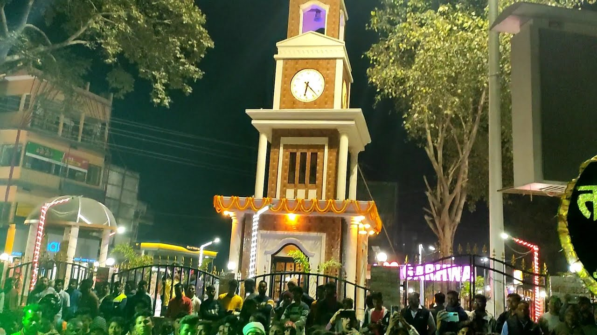
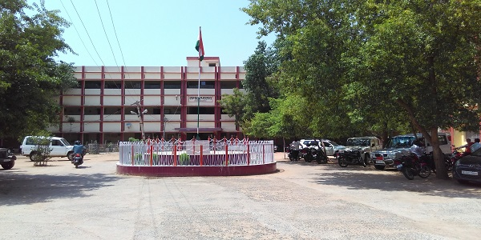
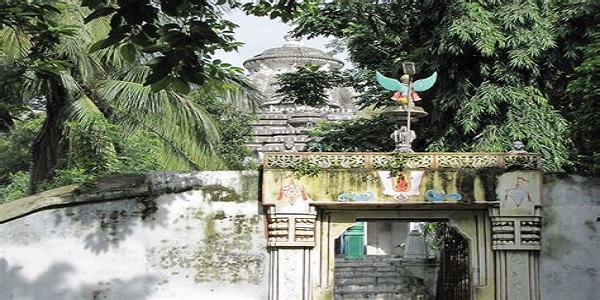
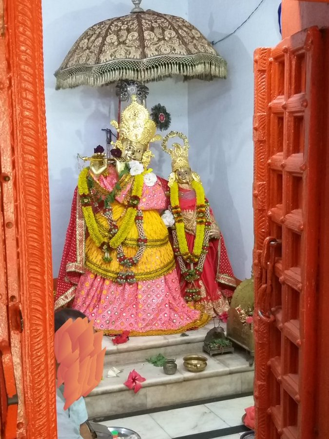
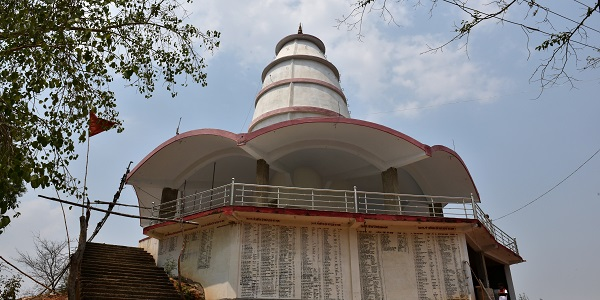
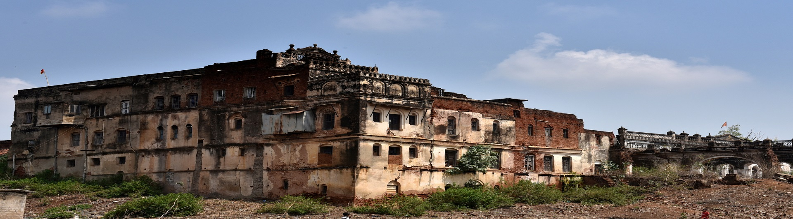
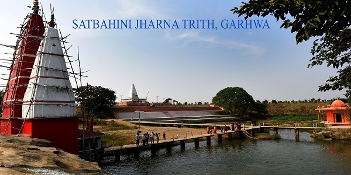
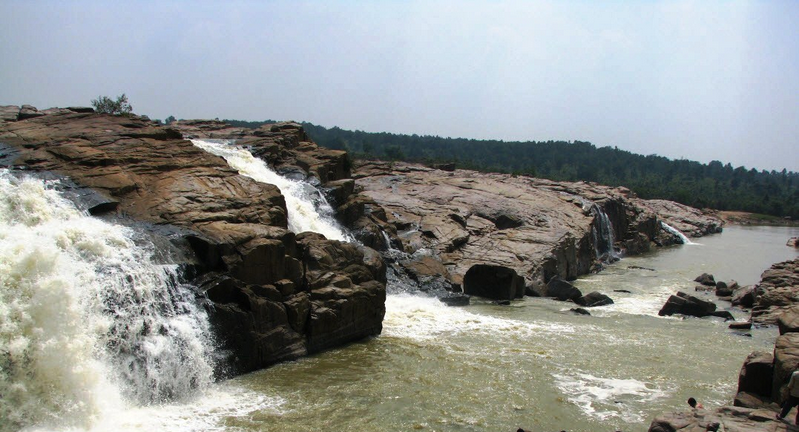

GHANTA GHAR
GHANTA GHAR clock tower is a clock tower located in the Garhwa city of Jharkhand.it is constructed in 2021 by Minister of Drinking water & Sanitation Department,Government of Jharkhand, MLA Garhwa.

COLLECTORATE
The erstwhile Garhwa Subdivision of Palamau district consisting of 8 Blocks was separated from Palamau district as an independent district “Garhwa” with effect from 1st April 1991. It is situated on Southwest corner of Palamau division, which lies between 23060’and 24039’ N latitude and 83022’ and 84000’ E longitude. The district is surrounded by river Sone in the north; Palamau district and area of Chhatisgarh in the south; Palamau district in the east and Sarguja district of Chhatisgarh and Sonebhadra district of U.P. in the west. Garhwa district is a part of Palamau Commissionery consisting of 20 blocks and three subdivisions namely Garhwa,Ranka & Nagar-Untari.

Khonhar Nath Mahadev Temple

RADHAKRISHNA MANDIR

RADHAKRISHNA MANDIR
The Radha Krishna Mandir is a famous spot of visit in NagarUntari, the fame is because of the golden Statue which are worshiped here. It is said that this Idol is of 32 mand of Gold.

Pahari Mandir Garhwa

Ranka Rajbhawan

Satbahini Temple Garhwa

Sukhaldari River
Sukhaldari is located on the banks of the river Kanahar in Dhurki, such a beautiful environment of nature and its pleasure is filled in here with a gorgeous waterfalls, nearby there are some more waterfalls such as Parasdiha fall in Bhawanathpur which is 50 km from the district headquarters and Gursandhu fall in Ranka will be a splendid spots of visit indeed.

Danro Dam Garhwa